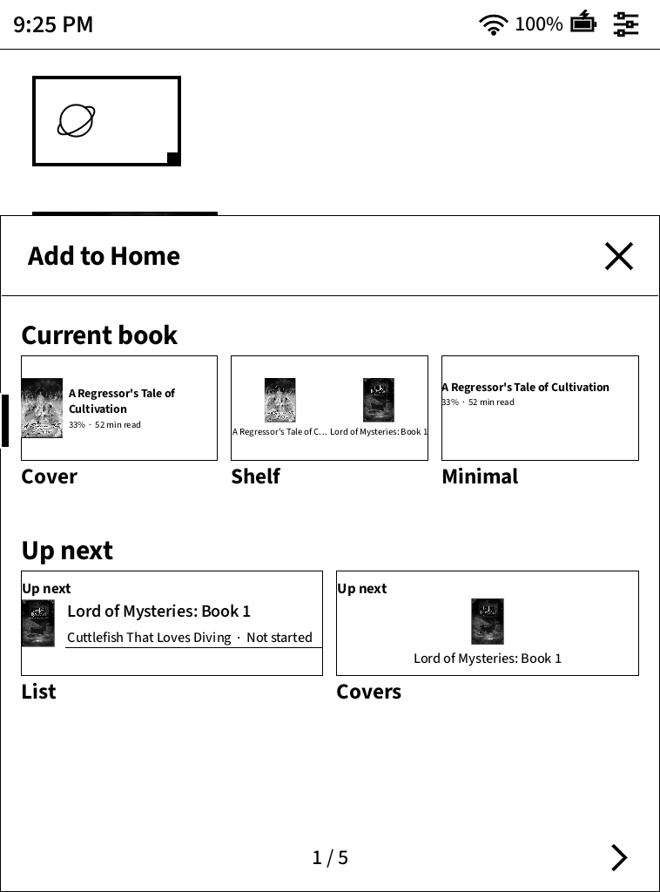

Ink Home
A reading-first Android home screen. Pick up your current book, browse your shelves or see how much you’ve read today.

Arrange your Home
Open Edit Home layout from the quick panel. Drag a widget into place or pull its corner to resize it. Save when the layout feels right.
The picker groups previews by widget. Give your current book a shelf, keep a square calendar by your favourite apps or add a ring that fills as you read toward your daily goal.
In Settings › Home grid, step the number of rows and columns up or down and choose a default border. Each widget can have its own border setting.
Reading with Folio
A layout for your screen
Folio adapts to monochrome e-ink, colour e-ink and LCD or OLED. Adjust text and interface sizes separately. LCD and OLED can follow Android’s theme and scroll through lists.
Your library, including SD cards
Browse covers in a grid or switch to a list. Ink Home finds books on internal storage and mounted SD cards. Search your shelves or filter them to the books you’re reading.
A built-in EPUB and TXT reader
Read in Literata, jump to a chapter from contents or adjust the type size and margins without losing your place. Prefer KOReader? Ink Home grants it access to the book you open.
Reading time
See today’s minutes against your goal, compare days on the weekly chart or look back over a month of reading on the calendar.
Your page controls
In Settings › Controls, assign hardware keys, reader tap zones and swipes to actions such as turning a page, skipping a chapter or opening contents.
A hardware-aware quick panel
Tap the status strip for device controls. The panel checks your tablet’s capabilities and connected audio outputs each time you open it.
Refresh edge
Tap the tab for a full screen clean on compatible Boox devices, even over another app. Hold for its menu or drag it to either edge. It remembers where you put it in each rotation.
Sleep artwork
Turn your current book cover into artwork sized to your panel. Select it in your device’s screensaver settings. On Boox, select it again when the artwork changes.
Install
- On the tablet, download ink-home.apk and open it. Allow installing from your browser or file manager if Android asks.
- Open Ink Home and let it see your files, so it can find your books.
- Press Home and choose Ink Home, then Always.
From a computer with adb, this does the same and grants the permissions in one go:
adb install ink-home.apk adb shell appops set dev.inkhome MANAGE_EXTERNAL_STORAGE allow adb shell appops set dev.inkhome GET_USAGE_STATS allow adb shell cmd package set-home-activity dev.inkhome/.MainActivity
Updates
Ink Home has no accounts, tracking or ads. It checks this project's releases about twice a day when you're on Wi-Fi. When there's a new version it asks first, downloads it, checks the SHA-256 when the release includes a checksum, and hands it to Android to install. Android only accepts it if it's signed by the same key as the version you have. You can turn the check off in Settings › Updates.
Build it yourself
You need JDK 17 and the Android SDK.
git clone https://github.com/Nyaughh/ink-home cd ink-home ./gradlew assembleRelease
For development, run ./gradlew assembleDebug test. Open Ink Home dev from your apps. It has its own permissions and settings and installs alongside the release.
Builds without the release key are signed with your debug key, so they can't update an installed official copy.